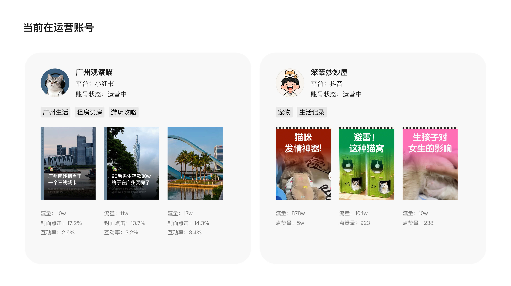
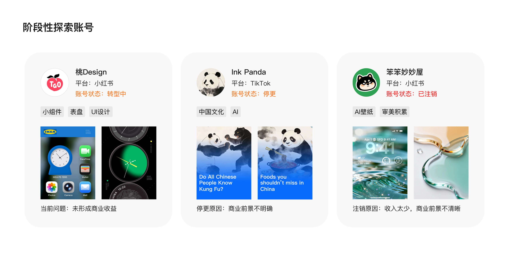

NO.1
概览
我的角色：在自媒体探索中，我以设计师视角参与从内容定位、账号策略、选题策划到视觉呈现的完整过程。通过对不同平台用户兴趣、内容形式和数据反馈的观察，持续调整内容方向，并将过往在视觉设计、产品体验和信息表达上的能力，转化为面向大众用户的内容创作与传播实践。

我的角色：在自媒体探索中，我以设计师视角参与从内容定位、账号策略、选题策划到视觉呈现的完整过程。通过对不同平台用户兴趣、内容形式和数据反馈的观察，持续调整内容方向，并将过往在视觉设计、产品体验和信息表达上的能力，转化为面向大众用户的内容创作与传播实践。
广州本地生活账号：多篇内容获得 10w+ 流量，封面点击率稳定在 13%–17%，选题判断和内容具备一定吸引力。
抖音宠物账号：曾产出 878w、104w 等高流量内容，验证了我在内容选题、情绪表达和传播节奏上的判断能力。
阶段性探索账号3个：这些账号在探索过程中帮助我判断了不同内容赛道的投入产出比：部分方向因商业闭环不清晰、收入模型较弱或长期运营价值有限，已阶段性暂停或转型。通过这些尝试，我逐步收敛出更适合持续运营的方向，也形成了更清晰的内容判断和账号取舍能力。


除了内容创作本身，我也系统补充了账号运营、平台规则和数据复盘相关知识。包括多账号矩阵布局、不同平台的内容标签/发布时间/时长策略、选题表搭建，
以及通过 AI 工具辅助选题分析、文案撰写和视频脚本生成。这个过程让我从单纯关注“内容好不好看”，逐步转向关注“用户是否有需求、平台如何分发、数据如何反馈、内容如何持续迭代”。

通过自媒体探索，我完成了多个垂直账号从定位、选题、视觉包装到内容发布的完整实践，覆盖城市生活、宠物内容、小组件设计、AI 视觉等方向。
我也逐步意识到，不同内容方向的长期价值并不只取决于单条数据，还需要综合判断内容成本、持续创作空间、商业化路径和个人能力匹配度。
因此，我对部分账号进行了转型、暂停或收敛，将精力集中到更适合长期沉淀的方向上。
这段经历让我从单纯的内容创作者，进一步转向以产品化思维运营内容：通过数据反馈验证方向，通过视觉表达提升点击，通过复盘调整选题结构，也让我对用户需求、传播效率和个人品牌建设有了更完整的理解。